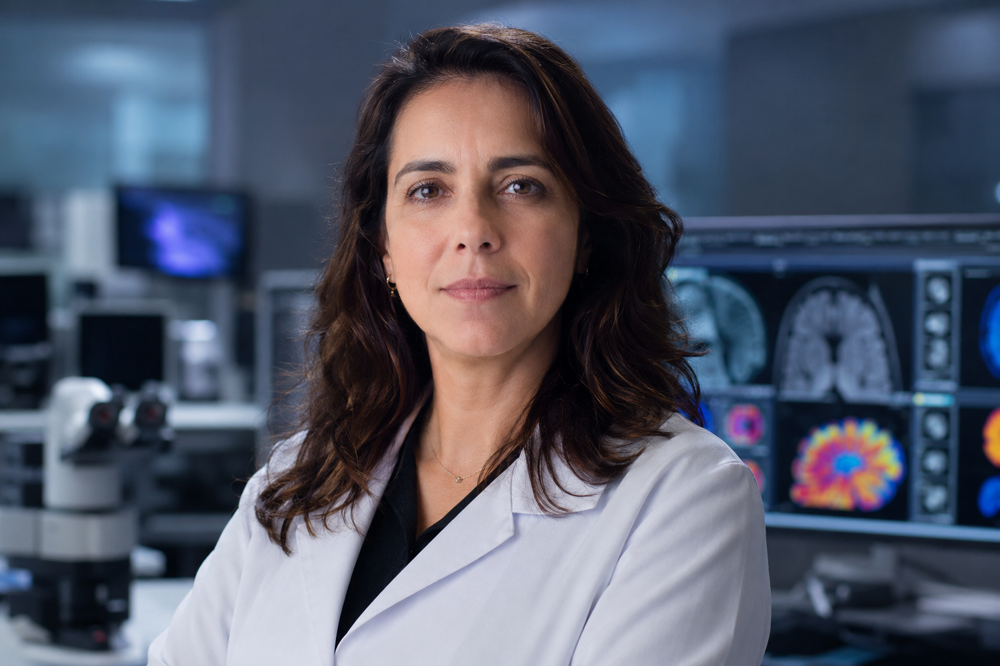
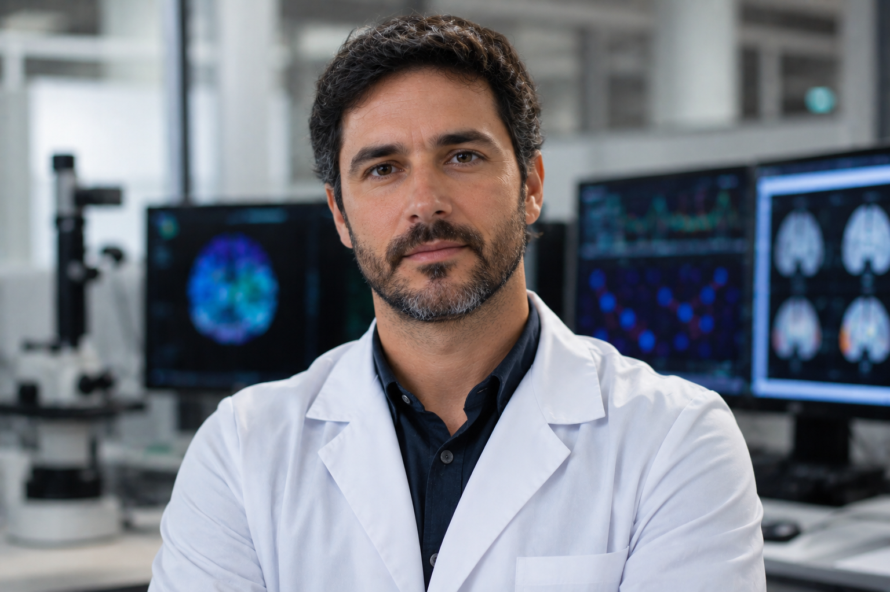
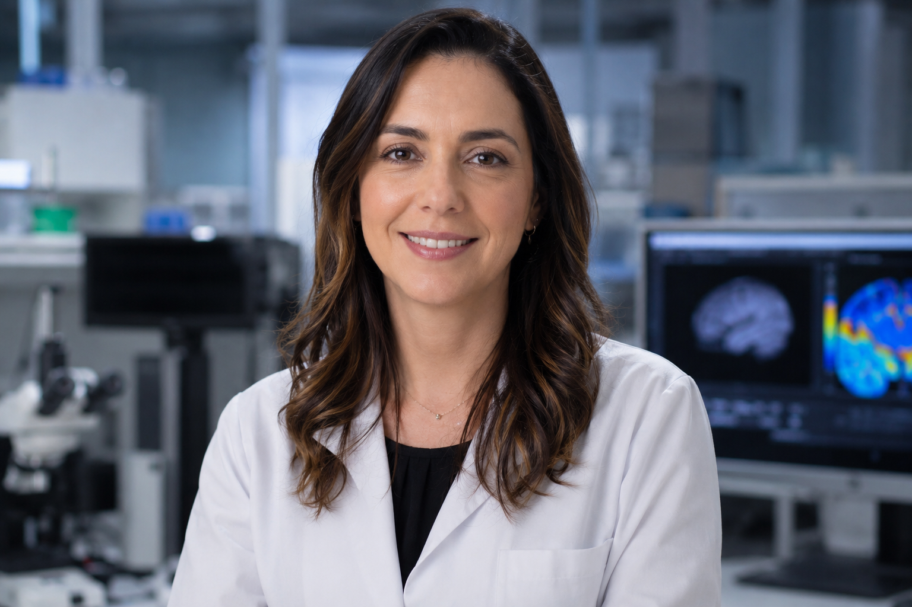
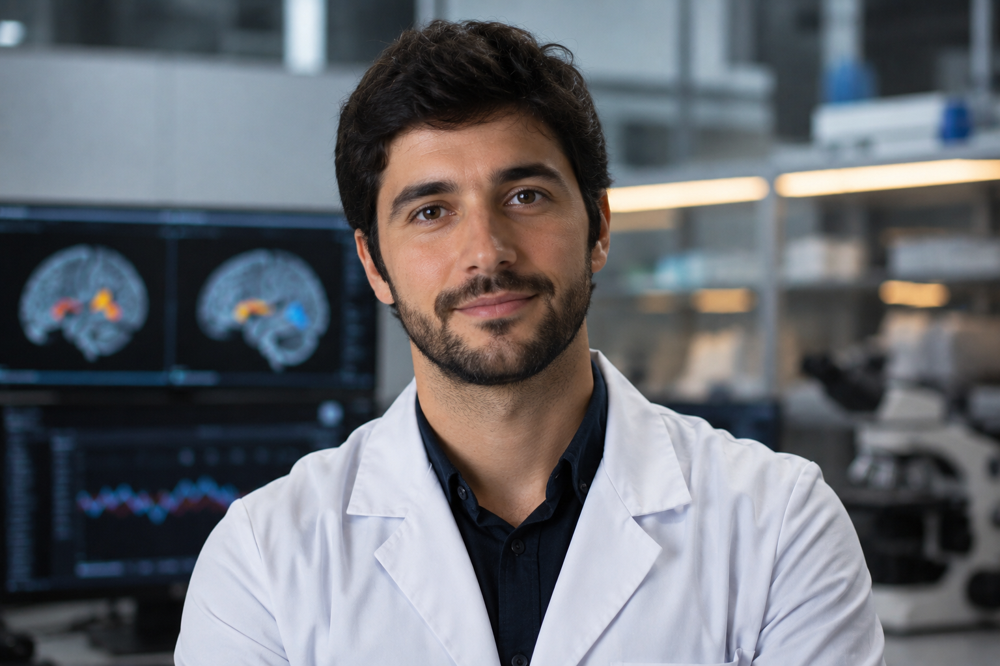
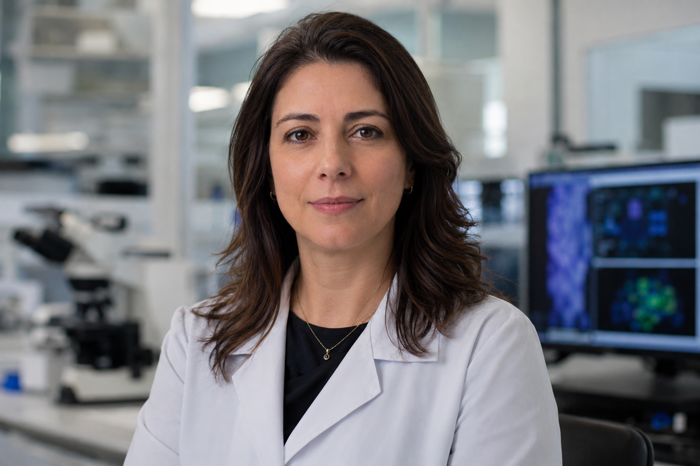
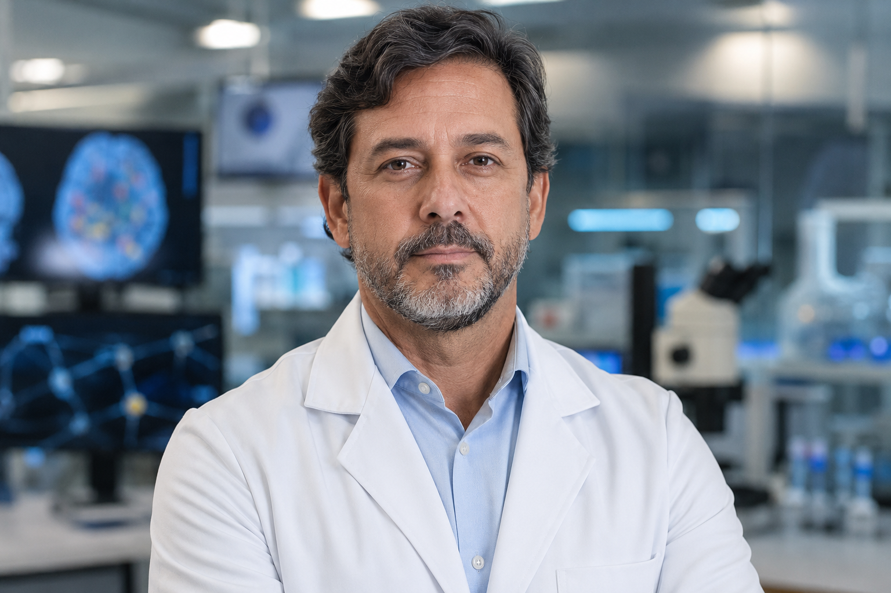
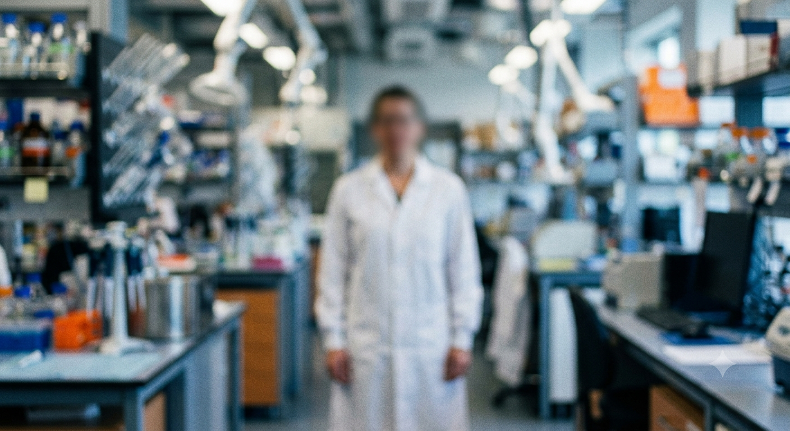

Pesquisadores dedicados ao avanço da neurociência cognitiva.
O Instituto Mnemosyne reúne especialistas em memória, percepção, cognição, inteligência artificial e psicologia experimental, promovendo pesquisas multidisciplinares de alto impacto científico.

Dra. Helena Duarte
Diretora do Laboratório de MemóriaEspecialista em Neurociência Cognitiva. Coordena pesquisas sobre consolidação da memória, aprendizagem e neuroplasticidade.

Dr. Rafael Nogueira
Coordenador de Percepção SensorialDesenvolve estudos sobre percepção visual, atenção seletiva e interpretação de estímulos sensoriais complexos.

Dra. Camila Salles
Pesquisadora SêniorResponsável pelos protocolos experimentais e pela análise comportamental em pesquisas cognitivas.

Dr. André Vilela
Cientista de DadosAtua no desenvolvimento de modelos de Inteligência Artificial para análise de dados neurocientíficos.

Dra. Beatriz Monteiro
Pesquisadora ClínicaEspecialista em memória episódica, envelhecimento cognitivo e doenças neurodegenerativas.

Dr. Lucas Ferraz
Diretor CientíficoSupervisiona os projetos científicos e as colaborações internacionais do Instituto Mnemosyne.

Dr. Marcelo Azevedo
Microbiologia Cognitiva
Perfil temporariamente indisponível.
Código interno: RH-117.